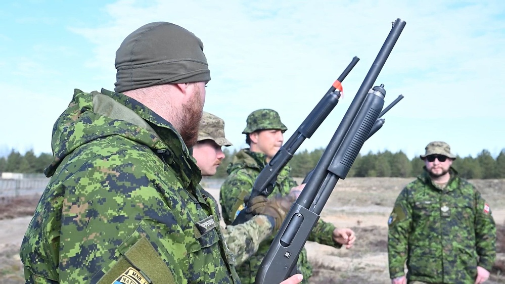

Aranruth builds sensing, spectrum and denial systems for the people who ran the missions they serve. The prior-service pipeline maps your military occupational specialty directly into the directorate that builds the hardware you once operated — without starting you at square one.

Every Aranruth program ends with an operator trying to break it. The prior-service pipeline puts the operator inside the build. Veterans arrive with what no curriculum teaches: how systems actually fail in the field — the battery that dies in cold, the interface that can't be read through NVGs, the detection that arrives two seconds too late to matter. That knowledge is engineered directly into requirement documents, acceptance tests and failure reviews.
The pipeline is not a transition program or a goodwill gesture. It is a recruiting doctrine. The engineer who has laid under a spectrum attack knows what latency budget means. The one who has called a track on a river crossing knows why classification confidence matters. Preference in technical review goes to the team that has lived the mission.
Standard mapping of Army, Marine, Navy and Air Force specialties into Aranruth directorates. Equivalent specialties from allied militaries map by function — list yours in the submission and the owning directorate adjudicates the fit.
| SPECIALTY | SERVICE | DIRECTORATE | WHAT YOU BUILD |
|---|---|---|---|
| 17E — Electronic Warfare Specialist | US Army | Spectrum | WRAITH DRFM response models, spectrum-control tooling, the defeat logic for the systems you once exploited. |
| 25S / 25U — Satellite & Signal Systems | US Army | Spectrum | FPGA signal chains, timing analysis, hardened comms behavior for degraded-link operations. |
| 14G / 13D — Air Defense Battle Management | US Army | Denial | BANSHEE acoustic denial employment, track handoff to fires cells, C-UAS kill-chain integration. |
| 11B / 19D — Infantry & Cavalry Scout | US Army | Field Systems | Employment doctrine, operator interfaces, the 0300 escalation line with fielded units. |
| 0671 / 0621 — Cyber & Signals (EW) | USMC | Spectrum | Contested-spectrum testing, red-team serials against Aranruth systems at the basin. |
| 0847 / 0317 — Scout Sniper & Recon | USMC | Field Systems | Detection ranges, signature discipline, ground truth for ARGUS kinematic identification. |
| CTT / STG — Cryptologic & Sonar Tech | USN | Denial | Acoustic signal processing, BPF isolation, passive-array design heritage for BANSHEE. |
| ATC / 1C1XX — Air Traffic & Control | USAF | Sensing | Track management, airspace integration, machine-track adjudication for ARGUS outputs. |
| 1N0 / IS — Intelligence & Imagery | USAF / USN | Sensing | Classification doctrine, SWIR imagery exploitation, track-integrity metrics. |
| Warrant / Field-grade ops officers | All | Programs | Program gates, exercise design at the Volume, partner-unit liaison. |
MAPPING IS FUNCTIONAL, NOT RANK-BASED. ALLIED SPECIALTIES (NATO / PARTNER NATIONS) ADJUDICATED BY FUNCTION.
Submission is one email: careers@aranruth.com. State your MOS, rate or AFSC, operational deployments, and the system you were best at breaking or fixing. No resumes required at first contact — the owning directorate reads the service record, not the formatting.
Service verification is handled through the Security & Assurance directorate with the same discipline as an export-control check: documents are held under restricted access, reviewed only by the adjudicating directorate, and never leave program channels. An active clearance accelerates nothing and is not required to start — most intake conversations happen at the open-channel level, and classified-adjacent work only begins after enrollment in the personnel reliability program.
The technical interview is a bench problem, not a personality interview: a broken track file, a noisy spectrum capture, or a failing acoustic sample — the same artifacts our engineers work weekly. Prior-service candidates who pass the bench visit the basin for a live serial, watching an operator run the system their specialty maps to.
Time in service counts as engineering experience where the function matches — a 17E with multiple rotations is senior talent on day one, not an entry-level hire. The Spectrum directorate's veterans write WRAITH's response doctrine; Denial's former air-defense officers define BANSHEE's employment geometry; Field Systems is majority prior service by design.
What does not carry over: parade discipline, briefing theater, and rank-based authority. Reviews are adversarial and technical. A specialist who ran counter-UAS in the field outranks a title in every argument about how the system will actually be used.
Relocation to the Mapim\u00ed operating region is required for range-facing roles — the basin is where the work is proven, and veterans are the ones who insist on being there. Remote arrangements exist for pure-modeling and signal-analysis disciplines.